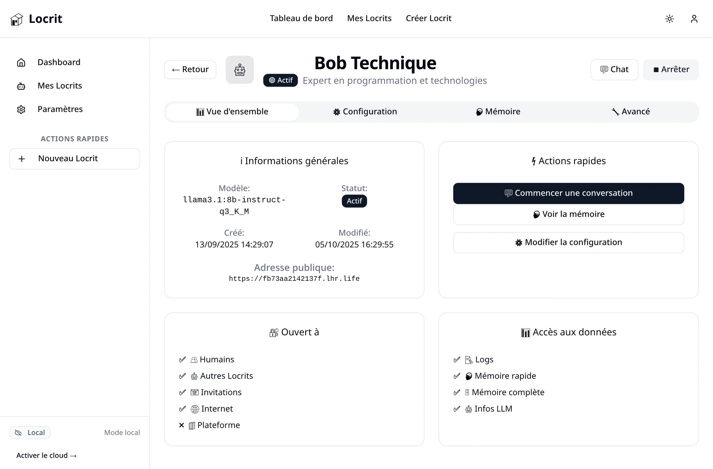

Locrits fait tourner vos chatbots autonomes sur votre propre machine.
Chaque Locrit a son identité, sa mémoire et ses permissions.
Pas d'abonnement, pas de cloud imposé. Vos Locrits vivent sur votre machine et ne partagent que ce que vous décidez.
Les modèles tournent avec Ollama, les données sont enregistrées sur votre disque. La synchronisation Firebase existe, mais c'est vous qui l'activez.
Messages, sessions, concepts : chaque Locrit garde sa propre mémoire d'une conversation à l'autre. Explorez-la, recherchez dedans, corrigez-la.
Pour chaque Locrit : ouvert aux humains, aux autres Locrits, à Internet ? Accès aux logs, à la mémoire complète ? Une case à cocher par réponse.
Des captures de l'application en fonctionnement, sans retouche.
Modèle, statut, adresse publique, et surtout ses permissions : à qui il est ouvert, à quelles données il accède.

Cinq étapes, de l'installation à la première conversation.
C'est lui qui fait tourner les modèles sur votre machine. Récupérez-en un avec
ollama run llama3.2 :
Locrits le détecte automatiquement.
Une seule commande,
./start.sh,
installe les dépendances puis démarre le backend et l'interface web. L'assistant de configuration vous accueille.
Un nom, une description de son rôle, un modèle Ollama. Expert technique, assistante de recherche, compagnon d'organisation : à vous de lui donner son caractère.
Cochez ce qu'il a le droit de faire : parler aux humains, aux autres Locrits, accepter des invitations, lire les logs ou sa mémoire complète. Tout le reste lui est fermé.
Chaque échange enrichit sa mémoire. Demandez-lui de retenir un point précis, ou ouvrez l'explorateur pour voir — et corriger — ce qu'il a gardé.
Du premier essai d'IA locale à l'expérimentation multi-agents.
Deux commandes, et il tourne chez vous.
$ git clone https://github.com/poqudrof/Locrits.git
$ cd Locrits && ./start.sh